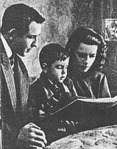

|
Valentin Muratov
(USSR) |
Sofia Muratova (USSR) |

|
Medal Total Olympic Games: 4
Gold, 1 Silver |
Medal Total Olympic Games: 2
Gold, 2 Silver, 3 Bronze |
Sofia Poduzdova was born on July 13, 1929, in Leningrad. In 1941, Sofia and her sister were evacuated to Rybinsk during the blockade of Leningrad. The sisters were relocated to Kazan in 1942 and to Kuibyshev in 1943. Sofia started taking a gymnastics class in a children's sports school in Kuibyshev, and three months later she took part in her first competition -- finishing in 21st place.
The sisters returned to Leningrad in 1944 and Sofia continued gymnastics at the Young Pioneers stadium. She trained hard, and in 1945 became the junior champion of the USSR. By 1949 she was a member of the senior national team, and at the 1950 USSR championships she won two event titles.
She married fellow gymnast Valentin Muratov in 1951 and gave birth to her first son, Sergei, in 1952. A leg injury prevented her from taking part in the Helsinki Olympics, and at the 1954 World Championships she broke her hand and had to withdraw from competition. Her husband declared he would win a medal for her -- and he won the AA gold. Muratova was injured again before the 1960 Olympics and many thought she would be left off the team. Not only did Sofia make the team, but she won 4 medals and placed 2nd overall.
A second son, Andrei, was born in 1961, and by 1962 Sofia had regained her competitive form and was included on the World championships team. She continued to train for the 1964 Olympics and traveled to Tokyo, but learned at the last minute that she would be the alternate.
In 1965 she became a coach; her most famous pupil was Olympic, European and world champion Olga Karasyova. She retired from coaching in 1999. Sofia died on September 25, 2006. She and Valentin were married for over 50 years; they had 2 grandsons and 1 great-grandson.
* * * * *
Valentin was born in 1928 in Kostyukovo and grew up in Moscow. In 1942, with his father missing at the front and most Moscow schools closed, Valentin went to work at a factory. After two years there, his mother insisted that Valentin return to school. The school's physical culture teacher, V. A. Korolkov, got Valentin interested in sports (and particularly gymnastics). Valentin mastered the exercises quickly and spent all of his free time practicing gymnastics. In his first competition (for Moscow schoolboys) he finished 4th overall.
In 1943, Muratov enrolled in the Moscow City Pedagogical School of Physical Training. A new coach, V. G. Andreev, carefully planned Valentin's training and in 1947 Muratov participated in his first USSR Championship. He finished 2nd overall.
1948 was a successful year for Valentin. He became champion of the "Bolshevik" sports society, champion of Moscow, champion of the All-Union Central Council of Trade Unions and USSR champion. He was named a member of the USSR national team and in 1949 achieved the rank Master of Sport.
Valentin injured his knee in 1951 (while training a double somersault dismount from the high bar) and could not train fully for six months. Coach K. S. Karakashyants helped him to regain his old skills, and by April 1952, at the Olympic selection competition, Muratov placed 6th AA. In Helsinki, Valentin won a team gold and placed 4th AA. He achieved the rank Merited Master of Sport.
In 1953 Muratov once again won the USSR championships, and in 1954 won four gold medals at the world championships (team, overall - tied with Viktor Chukarin, floor and high bar). At the 1956 Olympics, Valentin again won 4 medals (team, VT and FX gold; R silver).
Valentin was a national team member until 1959, when an injury at the USSR Spartakiade ended his competitive career. He became a coach for the Moscow team that year, and from 1960 to 1968 he was the head coach for the USSR national team. Valentin died on October 6, 2006.
| Valentin's Competition Results | Sofia's Competition Results |
|
1948 Moscow Championships: 1st AA (First Class division) USSR Championships: 1st AA (First Class division) 1949 HUN-USSR Dual Meet: 1st Team, 6th AA, 3rd V 1950 1952 1953 1954 1956 1957 1958 |
1947 Moscow Championships: 1st AA (girls' division) 1948 USSR Championships: 1st AA (Category I) 1949 USSR Championships: 8th AA USSR Team Championships: 3rd AA, 1st V 1950 1951 1955 1956 1957 1958 1960 1962 |
This page was last updated on
May 25, 2026.
© Gym Forum